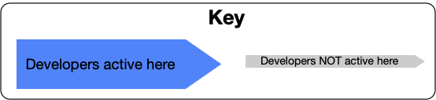

Введение
Краткое описание
Модель ветвления в системен контроля версий, в которой разработчики работают над кодом в единственной ветке под названием ‘trunk’ *. Эта модель позволяет не создавать другие долгоживущие ветки и описывает технику как именно это делать. Разработчики избегают merge конфликтов при слиянии кода, не ломают сборку, и живут долго и счастливо.
* master, в терминологии Git
Общие ветки вне mainline/master/trunk это плохо при любом релизном цикле:

Trunk-Based Development для небольших команд:

Масштабированный Trunk-Based Development:

Разработка, Требования и Предостережения

Trunk-Based Development это ключевой фактор Continuous Integration и, соответственно, Continuous Delivery. Когда каждый разработчик в команде вливает свой код в trunk несколько раз в день, то это позволяет легко выполнить ключевое требование Continuous Integration - все члены команды вливают свой код в trunk как минимум 1 раз в 24 часа. Это обеспечивает возможность сделать релиз кодовой базы по требованию и делает возможным Continuous Delivery.
Для того, чтобы определить границу между маленькой и большой Trunk-Based Development командами, нужно рассмотреть размер команды и скорость коммитов. Определение точного момента, когда команда разработки перестала быть маленькой и начала быть большой, лучше оставить тем, кто любит практиковаться в дебатах. Несмотря на это, любой член команды все равно делает полную “прединтеграционную” сборку (компиляция, прогон unit и интеграционных тестов) на своей рабочей станции прежде чем сделать commit/push кода в общую ветку.
Требования
- Вам следует сделать Trunk-Based Development вместо GitFlow и других моделей ветвления, которые поддерживают много долгоживущих веток
- Вы можете либо напрямую сделать commit/push в trunk (в маленькой команде), либо следовать Pull-Request подходу при условии что feature ветки имеют короткое время жизни и в feature ветке работает один человек.
Предостережения
-
В зависимости от размера комманды и частоты коммитов, feature ветки с коротким временем жизни используются для code-review и проверки сборки (CI), но не для создания артефактов или выпуска. Все проверки должны проходить до того, как произойдет слияние кода в ветку trunk, т.к. от этой ветки зависят другие разработчики. Такие ветки позволяют разработчикам быть вовлеченными в более быстрое и непрерывное code review коллег и/или других разработчиков до того, как их код будет влит в общую ветку trunk. Очень маленькие команды могут вливать код напрямую в trunk.
-
В зависимости от предполагаемой частоты релизов, у вас могут быть релизные ветки,которые создаются из ветки trunk в нужный момент. Ветки “застывают” до релиза (чтобы не было командной активности), и эти ветки удаляются через какое-то время после релиза. При другом подходе, релизных веток может не быть если команда разработки собирает релизы из trunk ветки и выбирает стратегию “правки по мере появления” для правки багов. Также, для того чтобы делать релизы из ветки trunk, команда должна обладать высокой пропускной способностью.
-
Команде нужно будет освоить технику ветвления по абстракции для того, чтобы добиться изменений в работе, и использовать feature flags в каждодневной разработке для подстраховки и сохранения частоты релизов (больше крутых вещей - см. параллельная разработка последовательных релизов)
-
Если у вас на проекте работает больше двух разработчиокв, вам потребуется поднять сервер для сборки и настроить проверку того, что код этих разработчиков не ломает сборку после того, как он был влит в trunk, а также до того, как он будет влит в trunk из feature ветки с коротким временем жизни.
-
Команды разработки могут без проблем увеличивать или уменьшать число разработчиков (в trunk) без какого-либо негативного влияния на пропускную способность или качество. Доказательство? Их есть у меня. Google работает по Trunk-Based Development и у них есть 35000 разработчиков and QA автоматизаторов в этом единственном trunk монорепозитории, так что в их случае они могут добавлять или убирать разработчиков из монорепозитория по запросу.
-
Люди, которые используют модель ветвления GitHub-flow, заметят, что подходы очень похожи, их единственное небольшое различе - то, откуда выпускается релиз.
-
Люди, которые используют модель ветвления Gitflow, заметят что она очень сильно отличается. Так было со многими разработчиками, которые использовали популярные в прошлом модели ветвления - ClearCase, Subversion, Perforce, StarTeam, VCS.
-
Многие публикации рекомендуют Trunk-Based Development, которую мы тут описываем. Эти публикации включают в себя, например, ‘Continuous Delivery’ и ‘DevOps Handbook’. Так что дальнейших споров про это быть не должно!
История
Trunk-Based Development это не новая модель ветвления. Слово ‘trunk’(ствол) является отсылкой к концепции растущего дерева, где самая толстая и длинная ветка это trunk(ствол), а остальные ветки отходят от неё и имеют более короткую длину.
В середине 90-х, когда в проектах выбирали модель ветвления, про эту модель знали мало и редко выбирали ее, а в 80-х она вообще рассматривалась только в теоретическом ключе. В круплейших организациях по разработке ПО, таких как Google и Facebook, эту модель ветвления практикуют на больших командах.
Более чем 30 лет различных улучшений в технологиях контроля версий, а также сопутствующих инструментов и техник, сделали Trunk-Based Development более (а иногда и менее) преобладающей в разработке, но это та самая модель ветвления, которой придерживались многие компании на протяжении многих лет.
Об этом сайте
Этот сайт это попытка собрать все факты, объяснения и техники для Trunk-Based Development, в одном месте, а также дополнить это 25 диаграммами для более глубокого понимания.